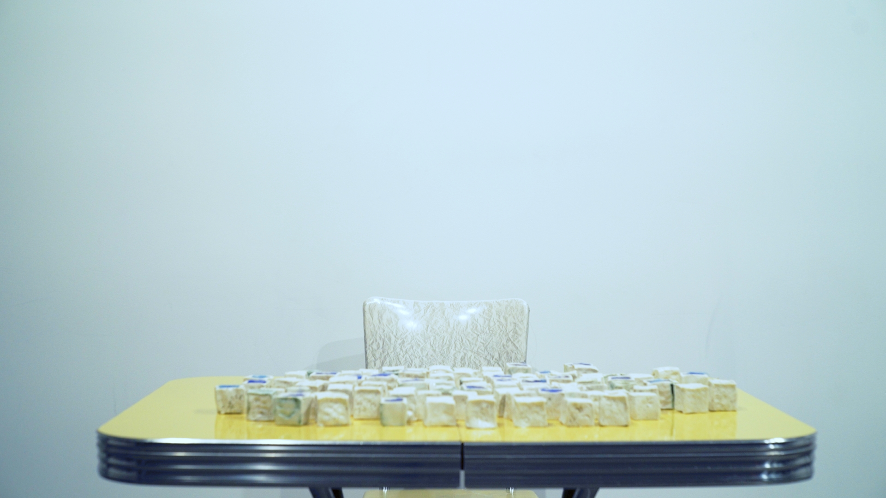
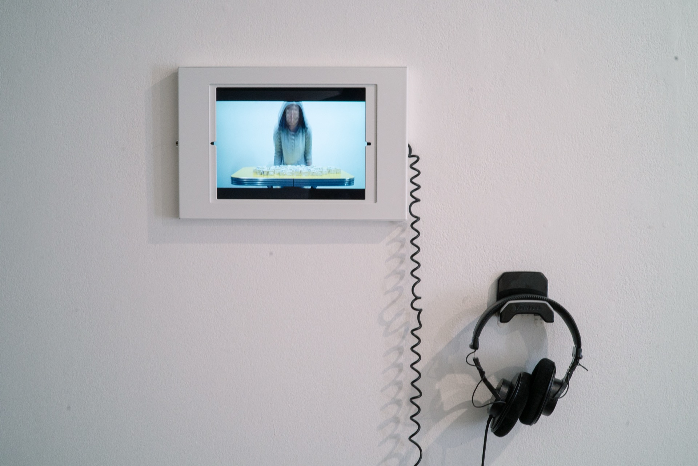
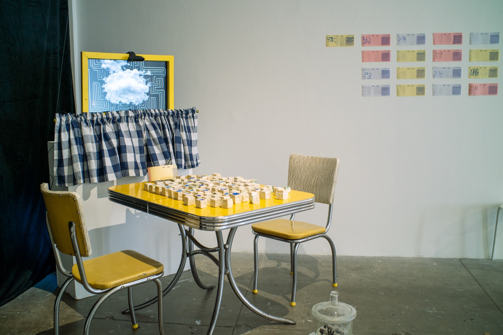
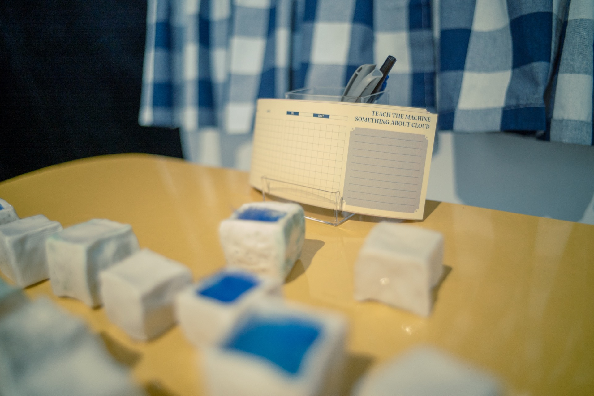

Teach The Machine Something About Cloud
Teach The Machine Something About Cloud (2024) is an interactive installation exploring data, perception, and human-machine interaction. Set at SOIL Artist Run Gallery in Seattle, it invites viewers to engage with a vintage yellow table covered in one-inch ceramic cubes, each containing soft blue silk fibers that resemble fog. Above the table, a yellow window frame displays a generative cloud animation, subtly influenced by the arrangement of the cubes below, with a webcam quietly watching.
The installation uses an AI-driven cloud simulation, responding to shapes and colors detected by the webcam. Viewers can interact by following a guided four-step process: flipping and arranging the cubes to create patterns, translating these onto a 9x10 grid, converting the grid into binary code, and pairing it with a written thought on “clouds.” Through this sequence, participants contribute to an arbitary dataset.
Teach The Machine Something About Cloud mocks the over-datafication of the world, technocapitalism’s occupation of cloud as a language domain, as well as the subjective, unquantifiable and impossible-to-unify nature of human labor involved in data production that is always situated in different corporeal bodies. Viewers encounter the limits of machine logic and grapple with abstract prompts—What does “cloud” mean? What would I teach a machine about it? By blending random human input with AI, the work underscores the complexities of data creation and hints at a future where human subjectivity holds value beyond algorithmic precision.
{kind=link}

{kind=link}

{kind=link}

{kind=link}
